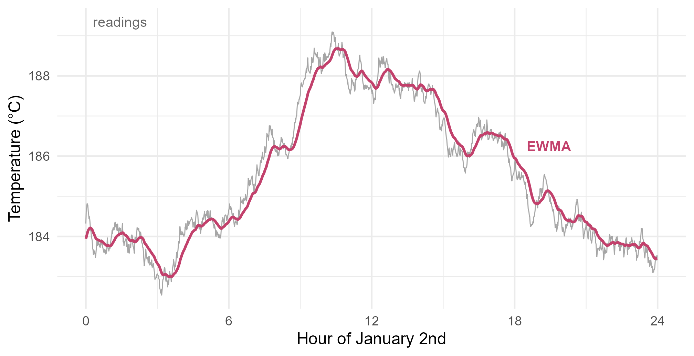

Module 4 · Lesson 1 of 14 Week 61 of 160 About 5–7 hours
Efficient and reliable R
A year of sensor data, and code that doesn’t take all afternoon
Write R code that’s fast and that you can trust: replace a loop with vectorized code, preallocate when a loop can’t be avoided, time and benchmark code with system.time() and bench::mark(), find the slow part with a profiler, measure memory, apply a function to every month of data with split() and vapply(), and make functions check their inputs.
So far in this course, you’ve mostly called functions that other people wrote: lm(), t.test(), manova(). This module opens them up. You’ll generate random numbers, simulate, resample, optimize, and draw samples from distributions that have no formula, and you’ll write the algorithms yourself. Statisticians call this statistical computing, and it’s what you reach for when the formulas run out.
Writing your own algorithms means writing code that runs fast enough, and that gives answers you can trust. This lesson is about both. The data come from reactor R3’s historian, the plant’s database of sensor readings, which logs the reactor temperature once a minute. All of 2026 is 525,600 readings:
length(temp_C)
#> [1] 525600
round(temp_C[1:8], 2)
#> [1] 183.65 183.75 183.90 183.78 183.84 183.80 183.81 183.68Dana, the process engineer, wants three things from them: the reaction’s rate constant at every minute, a smoothed temperature for the control chart, and a summary for each month.
Welcome to Module 4! This is where you stop just driving R and start building the engine. First stop: making it go fast. Vroom!
In this lesson you’ll:
- replace a loop with vectorized code, and see how much faster it is
- preallocate when a loop is the only way
- time and benchmark code, and find its slow parts with a profiler
- measure how much memory your data take up
- apply a function to every month of data with
split()andvapply() - make your functions check their inputs, so that mistakes stop loudly
Loops and vectors
The rate constant follows the Arrhenius equation from Lesson 2.9:
k = A \exp\!\left(-\frac{E_a}{RT}\right),
with the temperature T in kelvin. For this reaction, A = 1.1 \times 10^8 per minute and E_a = 82{,}000 J/mol, so at 185 °C, k is about 0.049 per minute.
You could compute k with a loop, one reading at a time. In most languages, that’s the natural way. In R, it’s slow, because R is an interpreted language: for every pass through the loop, R reads the code again, looks up every name, checks every type, and calls exp() for a single number. Do that 525,600 times and it adds up.
The alternative is vectorized code: write the formula once for the whole vector, temp_C + 273.15, and R hands all 525,600 numbers to its compiled C code in one call. Arithmetic, exp(), log(), comparisons and most of R’s math functions work this way.
Your turn. The setup code has loaded the year’s readings as temp_C, with n = 525,600. The code below computes k with a loop, and times it with system.time(). Fill in the vectorized version, and compare the times.
Use the whole vector, temp_C, where the loop used one element, temp_C[i].
A <- 1.1e8 # pre-exponential factor, per minute
Ea <- 82000 # activation energy, J/mol
R <- 8.314 # gas constant, J/(mol K)
loop_time <- system.time({
k_loop <- numeric(n)
for (i in seq_len(n)) k_loop[i] <- A * exp(-Ea / (R * (temp_C[i] + 273.15)))
})
vector_time <- system.time({
k <- A * exp(-Ea / (R * (temp_C + 273.15)))
})
summary(k)
c(loop = loop_time[["elapsed"]], vector = vector_time[["elapsed"]])The elapsed time is the wall-clock time in seconds. In the browser, the loop takes most of a second and the vector a few thousandths: a hundred times faster or more. (Your computer’s R runs loops faster than the browser’s does, but the vector still wins easily.)
Now look at the summary. The median, 0.049 per minute, is what you’d expect at 185 °C. But the maximum is about 300 million, and it has dragged the mean up to over a thousand. Something in the data is badly wrong. Hold that thought: you’ll find it later in this lesson.
When a loop is the only way
Some calculations can’t be written as one formula for the whole vector, because each step needs the result of the step before. The smoothed temperature for Dana’s control chart is one of them. It’s an exponentially weighted moving average (EWMA): each smoothed value is a weighted average of the new reading and the previous smoothed value,
z_t = \lambda x_t + (1 - \lambda) z_{t-1},
with a small weight such as \lambda = 0.05. So z_t remembers the recent past, and the minute-to-minute noise averages out.
A loop is fine here, as long as you avoid one trap: growing a vector. Code like z <- c(z, new_value) makes R allocate a new, longer vector and copy everything into it, every single time. With 20,000 values, on a typical computer:
system.time({ z <- c(); for (i in 1:20000) z <- c(z, temp_C[i]) })[["elapsed"]]
#> [1] 0.41
system.time({ z <- numeric(20000); for (i in 1:20000) z[i] <- temp_C[i] })[["elapsed"]]
#> [1] 0The second loop preallocates: it creates the full-length vector first with numeric(), and then fills it in place. It’s so fast that system.time() can hardly measure it, and the gap grows with the length, because the copying in the first loop grows like the square of the length. For a whole year of readings, growing the vector would take minutes instead of a fraction of a second.
NoteGo deeper: why growing a vector is so slow
To add value number i, c(z, new_value) copies the i - 1 values already in z. Over n values, that’s
0 + 1 + 2 + \cdots + (n - 1) = \frac{n(n-1)}{2}
copies: about 200 million for n = 20{,}000, and 138 billion for a year of readings. The preallocated loop copies nothing. The total work of the first grows like n^2, and of the second like n: computer scientists write these as O(n^2) and O(n). Doubling n doubles the time of an O(n) algorithm, and quadruples the time of an O(n^2) one.
Your turn. Compute the EWMA of the whole year with a loop. Preallocate the vector ewma with the right length.
The vector needs one value for every reading: numeric(n).
lambda <- 0.05
ewma <- numeric(n)
ewma[1] <- temp_C[1]
for (i in 2:n) ewma[i] <- lambda * temp_C[i] + (1 - lambda) * ewma[i - 1]
round(tail(ewma), 2)The year ends with a smoothed temperature of about 184.4 °C. The loop runs 525,600 times, but each pass only does a little arithmetic and writes one number into a vector that already exists, so it finishes in about a second, even in the browser.
Better still: someone may already have written your loop in C. The EWMA is a recursive filter, and base R’s stats::filter() runs recursive filters in compiled code. With method = "recursive", it computes y_t = x_t + f\,y_{t-1}, which is the EWMA when x_t is \lambda times the reading and f = 1 - \lambda.
Your turn. Compute the same EWMA with stats::filter(). The init argument sets the value before the first reading, so that the first smoothed value is the first reading.
The method is "recursive".
lambda <- 0.05
ewma2 <- stats::filter(lambda * temp_C, 1 - lambda, method = "recursive", init = temp_C[1])
ewma2 <- as.numeric(ewma2)
round(tail(ewma2), 2)The same numbers as your loop, in a few thousandths of a second. Before writing a loop, it’s worth a quick search for a function that already does it: cumsum(), cumprod(), diff(), stats::filter() and rle() are all loops written in C.
Here’s one day of readings, January 2nd, with the EWMA:
ewma_static <- as.numeric(stats::filter(0.05 * temp_C, 0.95, method = "recursive", init = temp_C[1]))
one_day <- data.frame(hour = (0:1439) / 60, reading = temp_C[1441:2880], smoothed = ewma_static[1441:2880])
ggplot(one_day, aes(x = hour)) +
geom_line(aes(y = reading), color = "grey65", linewidth = 0.35) +
geom_line(aes(y = smoothed), color = "#C2416C", linewidth = 0.9) +
annotate("text", x = 0.3, y = max(one_day$reading) + 0.25, label = "readings", hjust = 0, color = "grey40", size = 3.6) +
annotate("text", x = 18.5, y = one_day$smoothed[18.5 * 60] + 0.7, label = "EWMA", hjust = 0, color = "#C2416C", size = 3.6, fontface = "bold") +
scale_x_continuous(breaks = seq(0, 24, by = 6)) +
labs(x = "Hour of January 2nd", y = "Temperature (°C)") +
theme_minimal(base_size = 12)
The temperature drifts by several degrees over the day, as the cooling water warms and cools and the controller doesn’t quite keep up. The EWMA follows the drift without the noise, a few minutes behind.
Timing code: benchmarks
system.time() times one run, and a single run is noisy: your computer is doing other things, too. Benchmarking runs code many times and summarizes the times. The bench package’s bench::mark() does that, and two more useful things: it checks that every version gives the same answer, and it reports how much memory each one allocated.
Dana wants the mean temperature of each day. tapply(temp_C, day, mean) does it, by splitting the vector into 365 groups. But this data has a special structure: every day has exactly 1,440 readings. So matrix(temp_C, nrow = 1440) puts each day in its own column, without copying anything into groups, and colMeans() averages the columns in compiled code.
Your turn. Benchmark the two ways. as.numeric() drops the names that tapply() adds, so that bench::mark() can compare the answers.
Each column holds one day: nrow = 1440.
bench::mark(
tapply = as.numeric(tapply(temp_C, day, mean)),
matrix = colMeans(matrix(temp_C, nrow = 1440)),
min_iterations = 5
)The median column is the typical time. The matrix version is about 8 times faster in the browser, and more than 10 times faster in RStudio, because tapply() copies every reading into its group. In RStudio, the mem_alloc column shows the memory each version allocated: about 22 MB against 4 MB. (The browser’s R can’t measure memory, so there it shows NA.) If you put nrow = 60 instead, bench::mark() stops with an error: the answers wouldn’t match, which is exactly the check you want before trusting a faster version.
Finding the slow part: profiling
In a long analysis, you rarely know which part is slow, and guesses are often wrong. A profiler finds out. While your code runs, R’s profiler, Rprof(), stops it every few milliseconds and writes down which functions are running. Afterwards, summaryRprof() adds up where the time went.
Here’s a function that computes Dana’s daily report, with three steps: the rate constants (with a loop), the daily means of k (with tapply()), and the EWMA (with stats::filter()). The profiler shows what share of the time each step takes:
rate_loop <- function(temp_C) {
k <- numeric(length(temp_C))
for (i in seq_along(temp_C)) k[i] <- 1.1e8 * exp(-82000 / (8.314 * (temp_C[i] + 273.15)))
k
}
daily_means <- function(x) tapply(x, day, mean)
smooth_temp <- function(x) stats::filter(0.05 * x, 0.95, method = "recursive", init = x[1])
daily_report <- function(temp_C) {
k <- rate_loop(temp_C)
list(daily_k = daily_means(k), smooth = smooth_temp(temp_C))
}
prof_file <- tempfile()
Rprof(prof_file, interval = 0.005)
for (run in 1:20) report <- daily_report(temp_C)
Rprof(NULL)
prof <- summaryRprof(prof_file)$by.total
rownames(prof) <- gsub('"', "", rownames(prof)) # the names come with quotes around them
prof[c("rate_loop", "daily_means", "smooth_temp"), c("total.time", "total.pct")]
#> total.time total.pct
#> rate_loop 0.305 53.04
#> daily_means 0.155 26.96
#> smooth_temp 0.115 20.00The loop takes the biggest share, about half the time, so that’s the step to fix first: it’s the one-line change you made in the first exercise. That’s the profiler’s lesson in general: measure first, then speed up the part that matters.
The browser’s R can’t run Rprof(), so the profiler is for RStudio. There, the profvis package draws the profile as an interactive chart, line by line: you’ll try it in the practice section.
How much memory?
R keeps all your data in memory. A number stored as a double (R’s usual numeric type) takes 8 bytes, so a year of readings from one sensor takes about 4 megabytes:
format(object.size(temp_C), units = "MB")
#> [1] "4 Mb"The type matters. An integer takes 4 bytes, half as much. Text takes much more. Here’s one month of timestamps, stored as date-times and as text:
stamps <- as.POSIXct("2026-01-01", tz = "UTC") + 60 * (0:44639)
format(object.size(stamps), units = "MB")
#> [1] "0.3 Mb"
format(object.size(format(stamps, "%Y-%m-%d %H:%M")), units = "MB")
#> [1] "3.7 Mb"The text takes about ten times more memory on a typical (64-bit) computer, because R stores each distinct string separately, with some overhead. Store dates as dates and categories as factors, not as text.
Your turn. The plant’s historian records 2,000 sensors, or “tags”: temperatures, pressures, flows and levels. How many gigabytes would a year of all of them take, as doubles?
Multiply by the number of tags, 2000.
bytes <- as.numeric(object.size(temp_C))
bytes / 1e6 # megabytes for one tag, for one year
bytes * 2000 / 1e9 # gigabytes for all the tagsAbout 8.4 GB. A typical laptop has 8 to 16 GB of memory, which R shares with everything else. And many calculations make temporary copies, so in practice R needs two or three times the size of the data. A year of the whole historian won’t fit.
When the data don’t fit, don’t load them all. The usual strategies:
- Load only what you need.
readr::read_csv(..., col_select = ...)reads just some columns. A database query (Lessons 1.7 and 1.8) or a Parquet file (Lesson 1.9) can hand you just the rows and columns you ask for. - Summarize early. Hourly means of 2,000 tags for a year are 17.5 million numbers instead of a billion. Many questions only need the summary.
- Work in pieces. Process one month, or one tag, at a time, and keep only the results.
- Use tools built for it. The
arrowandduckdbpackages query files much bigger than memory, withdplyrcode that you already know.
Applying a function to every piece
A common pattern is split, apply, combine: split the data into pieces, apply a function to each piece, and combine the results. You’ve done it with group_by() and summarize(). Base R does it with split(), which makes a list with one element per group, and the apply family of functions, which run a function on every element of a list. It’s an example of functional programming: passing a function, such as max, as an argument to another function.
vapply() is the safest member of the family: you tell it what each result should look like, such as numeric(1) (one number), and it stops with an error if one of them doesn’t. sapply() guesses instead, and sometimes guesses wrong.
Your turn. Find the lowest temperature of each month.
Pass the function min, without parentheses.
monthly_min <- vapply(split(temp_C, month), min, numeric(1))
round(monthly_min, 1)Found it! Ten months bottom out around 180 °C, but March and July have a reading of −9999 °C, colder than absolute zero. That’s the historian’s code for a sensor fault: a minute when it had no valid reading. Two fake readings out of 525,600 were enough to wreck the mean rate constant in the first exercise, because k at −9999 °C is about 300 million.
Functions you can trust
The rate-constant formula didn’t complain about −9999 °C. It just returned a number, and the number was nonsense. Reliable code fails loudly instead: a function should check that its inputs make sense, and stop with a clear message if they don’t. stopifnot() is the quickest way. It stops unless every condition you give it is TRUE.
Should the function stop for a missing value, NA? Here, no. A missing reading should give a missing rate constant, not stop a whole year’s calculation. That’s what na.rm = TRUE inside all() allows.
Your turn. Make rate_constant() refuse temperatures at or below absolute zero, −273.15 °C.
Every temperature must be above -273.15.
rate_constant <- function(temp_C, A = 1.1e8, Ea = 82000) {
stopifnot(is.numeric(temp_C), all(temp_C > -273.15, na.rm = TRUE))
A * exp(-Ea / (8.314 * (temp_C + 273.15)))
}
rate_constant(185)0.0492 per minute at 185 °C. Now try rate_constant(temp_C): it stops with “all(temp_C > -273.15, na.rm = TRUE) is not TRUE”. The real fix is in the data. Mark the faults as missing with temp_C[temp_C == -9999] <- NA, and then rate_constant(temp_C) works, with NA for the two faulty minutes, and mean(k, na.rm = TRUE) is 0.0494 per minute.
Input checks are one habit of reliable code. Three more:
- Test your functions on cases where you know the answer. Here, k at 185 °C should be 0.049. In RStudio, the
testthatpackage turns such checks into tests that run with one click. - Set the seed whenever your code uses random numbers (Lesson 3), so that the results can be reproduced.
- Keep the raw data raw. Fix problems in code, such as the line that turns −9999 into
NA, so that every change is written down.
Challenge round
Challenge 1 · A grid of rate constants. The activation energy isn’t known exactly: it might be anywhere from 78 to 86 kJ/mol. outer(x, y, f) applies a vectorized function f to every combination of the values in x and y, and returns a matrix. Compute k for every combination of seven temperatures and three activation energies.
Inside the function, the temperature is called T.
temps <- seq(170, 200, by = 5)
Eas <- c(78000, 82000, 86000)
grid <- outer(temps, Eas, function(T, E) 1.1e8 * exp(-E / (8.314 * (T + 273.15))))
dimnames(grid) <- list(temp_C = temps, Ea = Eas)
signif(grid, 3)At 185 °C, k is 0.141 per minute if E_a is 78 kJ/mol, and 0.0172 if it’s 86 kJ/mol: an 8-fold range from an uncertainty of 5% either way in E_a. outer() passed it all 21 combinations at once, as two vectors, so the function ran just once.
Challenge 2 · The longest excursion. The alarm sounds when the temperature goes above 188 °C. What’s the longest stretch of consecutive minutes above it? It looks like a job for a loop, but rle() (run-length encoding) does it in C: it turns a vector into runs of identical values, with each run’s lengths and values.
Keep only the runs whose value is TRUE: runs$lengths[runs$values].
runs <- rle(temp_C > 188)
sum(runs$values) # how many excursions above 188 °C
max(runs$lengths[runs$values]) # the longest one, in minutes726 excursions in the year, and the longest lasted 204 minutes, nearly three and a half hours, in March. Each run’s values is TRUE (above 188 °C) or FALSE, and runs$lengths[runs$values] keeps the lengths of the TRUE runs.
Quick quiz
1. Why is exp(x) on a whole vector so much faster than a loop over its elements?
The work per number is the same. The loop’s overhead is R reading and checking the code 525,600 times.
2. Why is z <- c(z, x[i]) inside a loop slow?
Preallocate with numeric(n) and fill in place, and the work grows only like the length.
3. What does bench::mark() do that one system.time() doesn’t?
One timing is noisy. Many timings, summarized by the median, are reliable.
4. Your analysis takes ten minutes. What should you do first?
Speeding up a step that takes 5% of the time can save at most 5%. The profiler tells you which step matters.
5. About how much memory does a vector of one million doubles take?
Each double takes 8 bytes.
6. A function returns nonsense for an impossible input. What’s the better design?
A loud error is found at once. A quiet wrong number can spoil a whole analysis, as two −9999 readings spoiled the mean rate constant.
Wrap-up
Your code is faster now, and harder to fool. Here’s what you’ve learned:
- Vectorize: write the formula for the whole vector, and let R’s compiled code do the loop. Here, it was a hundred times faster or more.
- Preallocate when a loop is unavoidable, and never grow a vector inside a loop. Better still, look for a function that runs the loop in C, such as
stats::filter()orrle(). - Measure:
system.time()for one run,bench::mark()for a fair comparison that checks the answers, and a profiler to find the slow part before you fix anything. - Memory: a double takes 8 bytes. A year of the whole historian wouldn’t fit, so load only what you need, summarize early, and work in pieces.
- Split, apply, combine with
split()andvapply(), which checks the type of every result. - Fail loudly: check inputs with
stopifnot(), test functions on known answers, set seeds, and fix data in code. Two sensor faults coded as −9999 would otherwise have spoiled the mean rate constant.
TipPractice in RStudio (optional, about an hour)
Copy the setup code at the top of this lesson’s exercises into a script in your project, to recreate the year of readings.
- Profile it. Install the profiler with
install.packages("profvis"). Runprofvis::profvis(daily_report(temp_C))with this lesson’sdaily_report()function. Which line takes the most time? Replace the loop with vectorized code, profile again, and see what’s slowest now. - Test it. Install
testthat, and write tests forrate_constant():testthat::expect_equal(rate_constant(185), 0.0492, tolerance = 1e-3)andtestthat::expect_error(rate_constant(-9999)). What other cases deserve a test? - Files on disk. Save the year as a CSV file with
readr::write_csv()and as a Parquet file withnanoparquet::write_parquet()(Lesson 1.9). Compare the file sizes, and the time each takes to read back in. - Your computer against the browser. Rerun the loop-against-vector benchmark in RStudio. How much faster are loops there? Is the vector still faster?
NoteKey words from this lesson
- Vectorized code
- Code that applies an operation to a whole vector at once, so that the work is done in compiled code.
- Preallocation
- Creating an object at its final size before a loop fills it, instead of growing it.
- Benchmark
- A careful timing that runs code many times, often comparing several versions.
- Profiler
-
A tool that records where a program spends its time, such as
Rprof()orprofvis. - Split, apply, combine
- Splitting data into groups, applying a function to each group, and combining the results.
- Functional programming
-
A style of programming that passes functions as arguments to other functions, as in
vapply(x, max, numeric(1)). - Defensive programming
- Writing code that checks its inputs and assumptions, and fails with a clear message when they’re wrong.
NoteWant to read more?
- Hadley Wickham, Advanced R, chapters 23, “Measuring performance” and 24, “Improving performance”. Profiling with
profvis, benchmarking withbench, and the main ways to speed code up. - Colin Gillespie and Robin Lovelace, Efficient R Programming, chapter 3, “Efficient programming”. Vectorization, preallocation and the apply family, with benchmarks.
- Patrick Burns, The R Inferno, circles 2 and 3, “Growing objects” and “Failing to vectorize”. A short, funny tour of R’s traps.